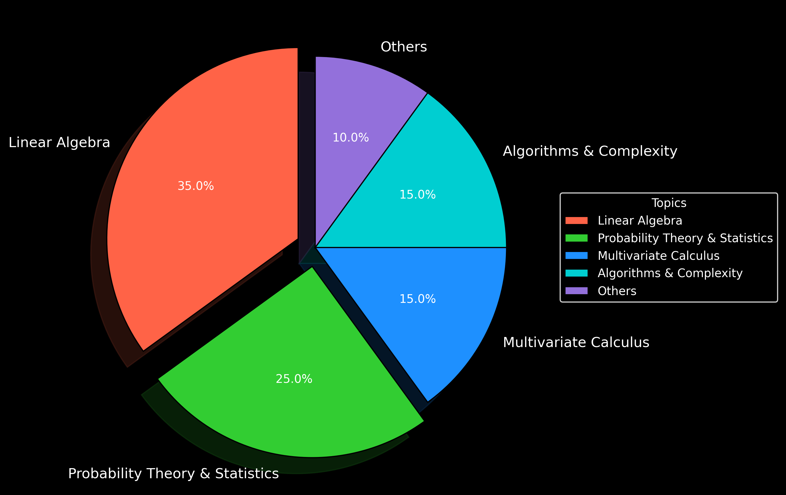

Short on time? No problem.
Here’s the no-fluff resource list to get you right where you need to be.
Disclaimer: These might not be the absolute best resources out there, and I haven’t mastered them all. They’re just the ones I’ve personally used and liked or were suggested by trusted folks.
(source: Wale Akinfaderin)
I randomly stumbled upon this course when I was just starting with ml math, and I’m so glad I did. It’s clear, structured, and focuses on what’s actually useful for ML. Since then, I’ve just been grinding through it and haven’t felt the need to check out other resources. That said, it was a paid course (and I know that’s not for everyone), so I’ll share some other solid and accessible resources below!
This book is a must for a strong ML math foundation: Mathematics for Machine Learning.
Before jumping into advanced stuff, make sure you’ve got the basics down arithmetic, equations, and logarithms. They’re the foundation for everything else.
You’ll also need to get familiar with vectors, matrices, determinants, and eigenvalues since they’re key to how ML models work. Prof. Gilbert Strang’s lectures are a great way to make sense of it all.
To get the hang of machine learning, you need to know about random variables, Bayes’ theorem, distributions, hypothesis testing, probability theory, and inferential statistics. These basics are super useful for working with data and making solid predictions.
Prof. John Tsitsiklis’s lectures were incredibly helpful for me in breaking down these topics and making them easier to understand.
Finally, up next is Calculus, where you'll tackle limits, derivatives, integrals, and how they apply to real-world problems. You’ll also dive into functions of several variables, covering partial derivatives, optimization, and gradient descent-essential for machine learning.
The lectures from Prof. Leonard on YouTube were super helpful for me in grasping these concepts. They’re clear, engaging, and a great way to break down the tough stuff. And if you're looking for more hands-on practice, the resources on UrSide also offer some fantastic exercises to solidify your understanding.
few recommended readings along with exercises to work on for each:
1. Linear Algebra and Learning from Data by Gilbert Strang
2. Pattern Recognition and Machine Learning by Christopher M. Bishop
3. Calculus for Machine Learning by Jason Boyd
Here’s the deal: It’s tempting to just memorize formulas, but the real magic happens when you understand how and why things work. Take vector calculus, for example it’s key to understanding gradient descent in machine learning.
Quick Tip: When you’re learning solo, it’s easy to skip over things. Make sure to dive deep into each topic to avoid any knowledge gaps later on.
Appreciate you reading to the end! :)